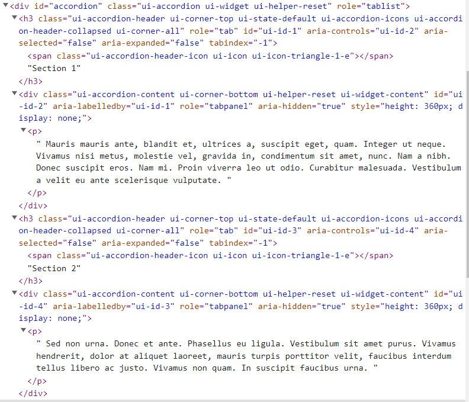

Elke accordion sectie bestaat uit: div,h3,span en p elementen
Door andere secties te sluiten en open te doen veranderen de eigenschappen van de klasse, namelijk ui-accordion-header-active naar ui-accordion-header-collapsed. Ui-accordion-content-active verschijnt bij de content die geshowed moet worden